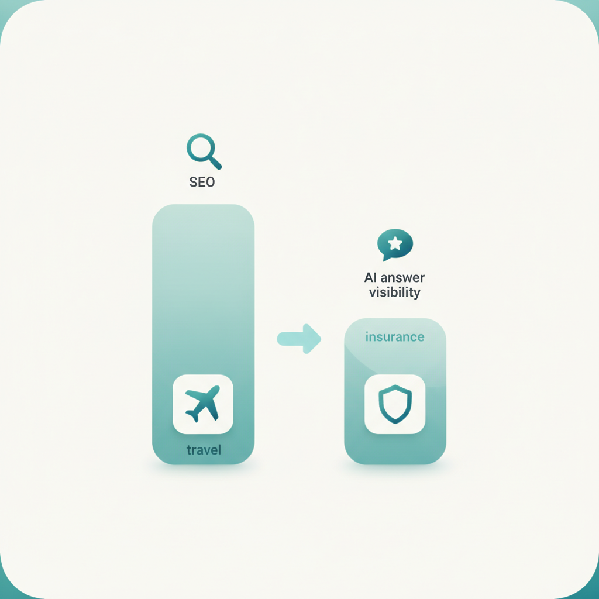
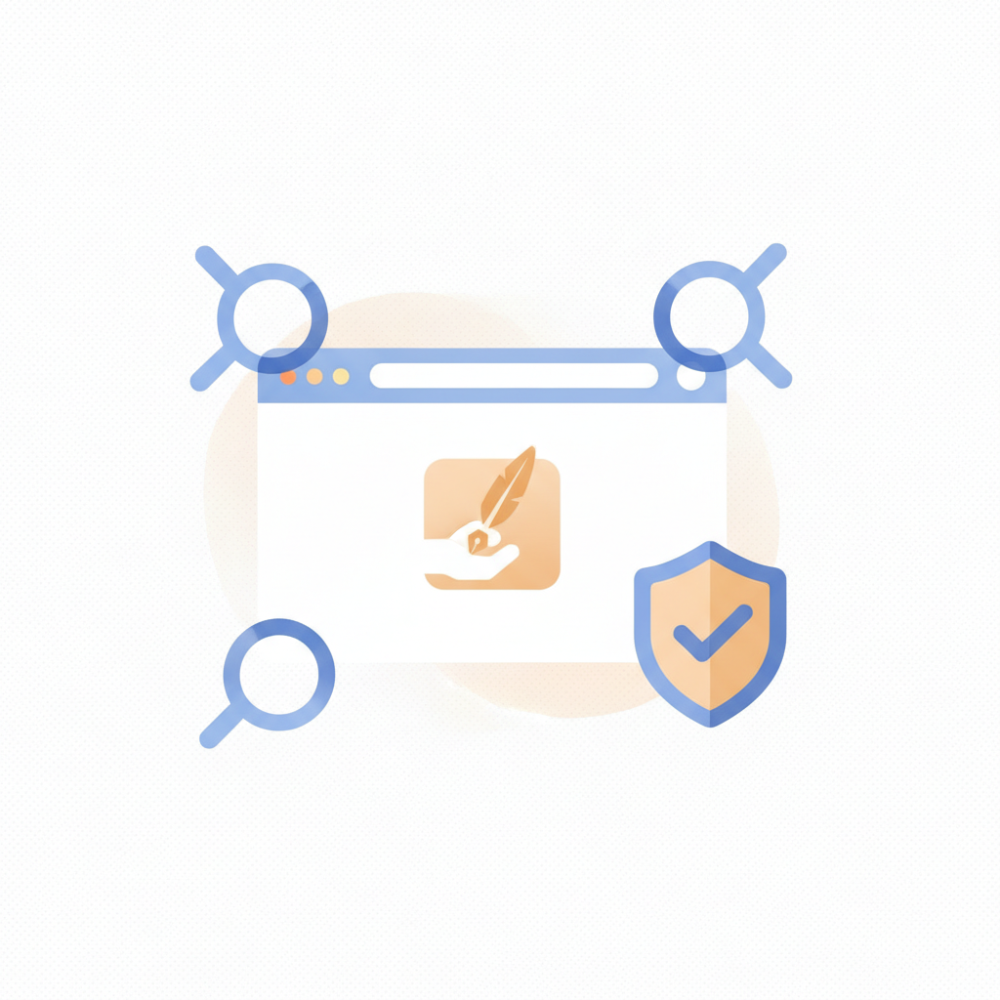
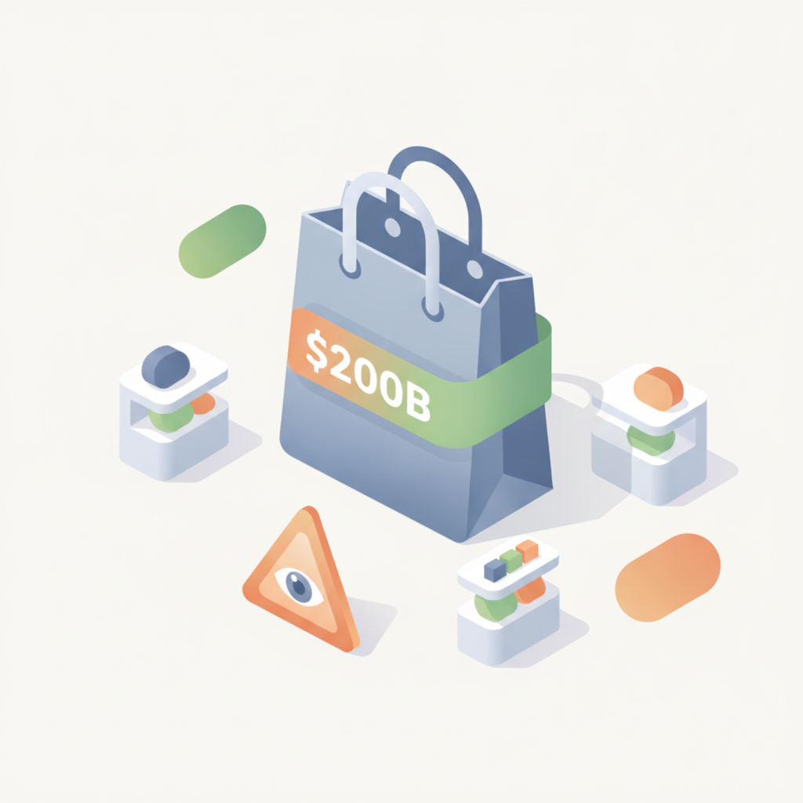
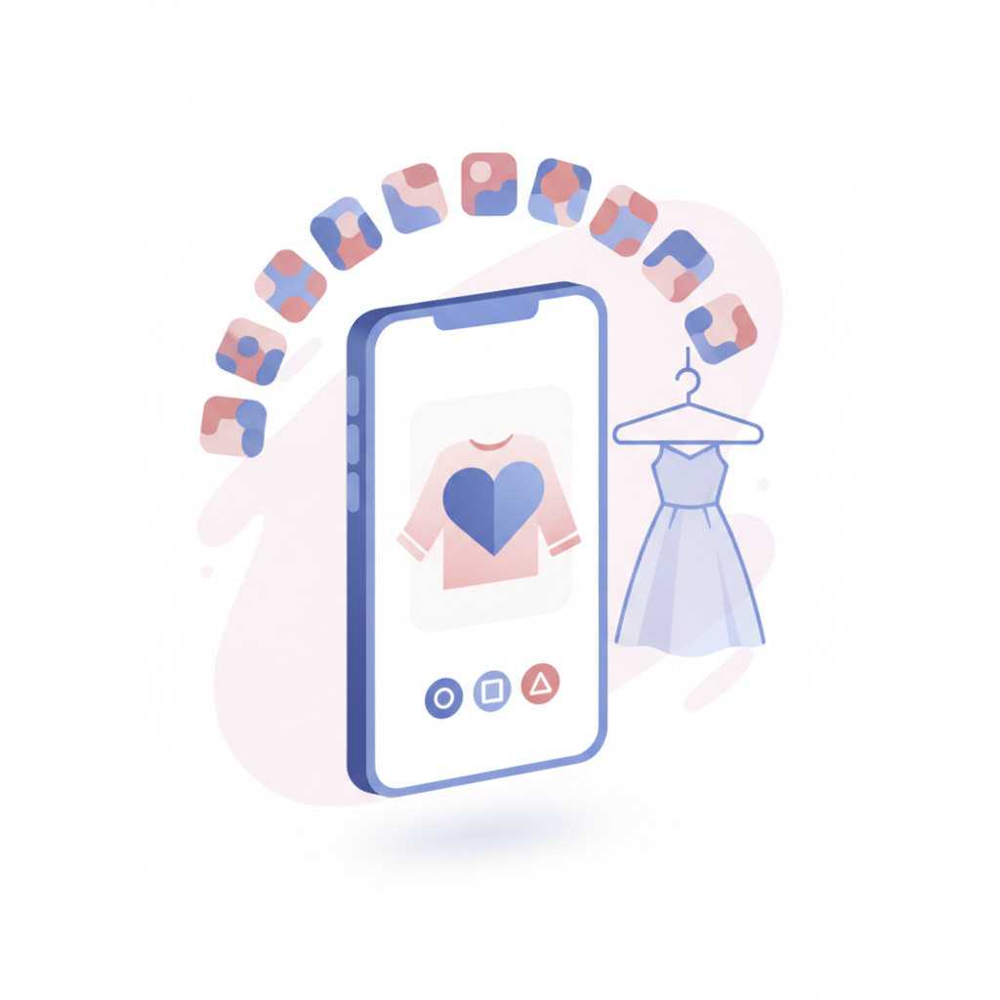

안녕하세요! 월요일 마케팅 소식 전해드립니다 😊 오늘은 눌리(Nuuly)의 마이크로드라마 전략이 흥미롭습니다. 의류 렌털 브랜드가 틱톡·인스타·유튜브에 12부작 로맨틱 코미디 시리즈를 직접 제작해 선보이는 행보인데요, 브랜드가 광고주가 아닌 콘텐츠 제작자로 완전히 역할을 전환한 사례입니다. 플랫폼 알고리즘에 올라타는 방식이 아니라, 소비자가 자발적으로 다음 화를 기다리게 만드는 구조를 브랜드 스스로 설계했다는 점에서 콘텐츠 마케팅의 새로운 접근법으로 챙겨두실 만합니다.
마케팅 뉴스에서는 SEO 강자가 AI 답변에서도 강자는 아니라는 분석이 인상적입니다. 프랙틀이 8개 업종을 분석한 결과, 검색 순위가 높은 브랜드가 GPT-4o·제미나이 등 AI 답변에서는 오히려 밀리는 사례가 확인됐는데요, 기존 SEO 전략만으로는 AI 시대의 브랜드 가시성을 담보할 수 없다는 의미입니다. 동시에 소비자 10명 중 8명 이상이 AI가 제시한 정보를 원 출처에서 직접 재확인한다는 워드프레스 VIP 보고서까지 함께 읽으면, AI 환경에서 브랜드 신뢰도와 원본 콘텐츠의 품질이 더욱 중요해진다는 흐름이 뚜렷해집니다.
한편 카카오가 카카오톡·AI 플랫폼을 담당하는 '카카오AI'와 엔터·핀테크·모빌리티를 맡는 '카카오X'로 인적분할을 결의하면서, 국내 최대 메시징 플랫폼의 사업 구조가 크게 재편될 전망입니다. 마케팅 채널로서 카카오 생태계를 활용 중이신 분들이라면 이후 변화 방향을 면밀히 살펴두실 필요가 있습니다. 이번 주도 좋은 인사이트 가득 챙기시며 힘차게 시작하세요! 🚀
생성형 AI가 광고 문구·이미지 제작을 넘어 미디어 선택, 캠페인 최적화, 소비자 구매 결정에까지 영향을 미치기 시작했다. 광고업계의 화두도 'AI를 사용할 것인가'에서 'AI에 어디까지 맡길 것인가'로 전환되고 있다. 광고주는 업무 자동화에, 미디어 기업은 데이터·AI를 광고 경쟁력으로 활용하며, 소비자는 AI를 통해 브랜드를 탐색한다. 마케터는 AI가 의사결정 전반에 개입하는 구조적 변화에 대비한 전략 재설계가 필요하다.
›
2디지털 마케팅 기업 프랙틀이 여행·보험·SaaS 등 8개 업종을 분석한 결과, SEO 경쟁력이 높은 브랜드가 GPT-4o·제미나이 등 AI 답변에서도 자주 노출되는 경향은 있었지만 반드시 일치하지는 않았다. 검색 성과에 비해 AI 가시성이 낮거나, 반대로 AI에서 더 자주 언급되는 브랜드도 확인됐다. 기존 SEO 전략과 별개로 AI 검색 노출을 위한 독립적인 대응 전략이 마케터에게 새로운 과제로 부상하고 있다.
›
3워드프레스 VIP의 '웹의 미래 2026' 보고서에 따르면 소비자 10명 중 8명 이상이 AI가 제시한 정보를 원 출처에서 직접 재확인하는 것으로 나타났다. AI 검색 노출을 위해 기업들이 상당한 자원을 투입하고 있지만, 소비자는 여전히 신뢰할 수 있는 사람이 만든 콘텐츠를 선호하고 있다. 마케터는 AI 가시성 확보와 함께 원본 콘텐츠의 신뢰도와 출처 권위를 높이는 전략을 병행해야 한다.
›
4WARC 미디어 보고서에 따르면 글로벌 리테일 미디어 광고시장이 2026년 2000억 달러를 넘어설 전망이다. 시장 규모는 계속 확대되고 있지만 성장 속도는 둔화하고 있으며, 유통업체들의 광고 매출 확대 경쟁이 과도한 광고 노출로 이어져 소비자 쇼핑 경험과 광고 효과를 저해할 수 있다는 우려도 제기됐다. 국내 마케터들도 리테일 미디어 투자 확대 시 광고 빈도와 소비자 경험 균형을 고려한 전략 설계가 필요하다.
› 5카카오가 이사회를 열고 카카오톡·AI 플랫폼 사업을 담당하는 신설법인 '카카오AI'와 엔터·핀테크·모빌리티 등 서비스 사업을 맡는 존속법인 '카카오X'로 인적분할을 결의했다. 분할비율은 순자산 장부가액 기준 카카오AI 0.36, 카카오X 0.64이며 기존 주주는 두 회사 주식을 모두 배정받는다. 카카오톡을 AI 인터페이스로 확장한다는 방향은 국내 메시지·광고 플랫폼 생태계 변화에 직접적인 영향을 미칠 수 있어 마케터의 주목이 필요하다.
› 6시장분석업체 안테나에 따르면 2026년 미국 특화 구독형 스트리밍(SVOD) 서비스 가입자가 전년 대비 약 14% 증가한 반면, 종합 SVOD의 증가율은 6%에 그쳤다. 애니메이션·공포·영국 콘텐츠 등 뚜렷한 취향을 겨냥한 서비스에 이용자가 집중되며 스트리밍 시장이 빠르게 세분화되고 있다. 마케터는 대중 채널 중심 미디어 믹스에서 벗어나 타깃 취향에 맞는 특화 플랫폼을 활용한 정밀 타깃팅 전략을 검토할 시점이다.
›
7의류 렌털 브랜드 눌리(Nuuly)가 옴니채널 전략 대신 소셜 미디어 전용 12부작 로맨틱 코미디 마이크로드라마 'Heart on My Sleeve'를 8월 19일부터 틱톡·인스타그램·유튜브에서 공개한다. 제품을 전면에 내세우지 않고 브랜드를 조연으로 배치해, 소비자가 자발적으로 시청하도록 유도하는 감성적 연결 전략을 택했다. 브랜디드 콘텐츠가 숏폼을 넘어 시리즈 드라마 형태로 진화하는 흐름은 국내 소셜 마케팅 전략에도 시사점을 준다.
›브랜드 진단부터 지금 당장 해야 할 우선순위까지,
30분 무료 상담에서 함께 정리해드려요.
이미 수십 개 브랜드가 상담받았습니다.
내 브랜드처럼, 함께 고민하는 팀원의 마음으로 봅니다.
스타트업 대표·마케팅 담당자를 위한 30분